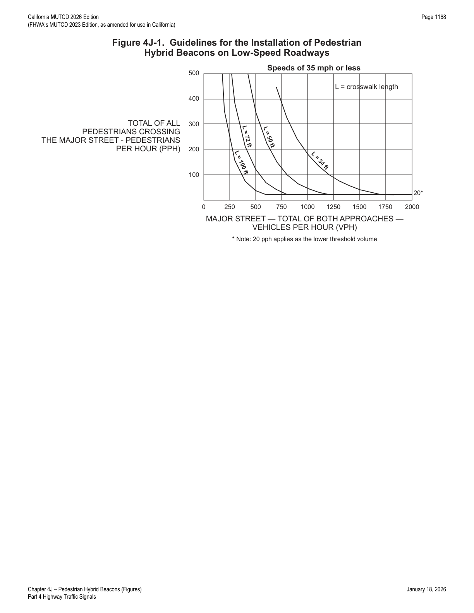
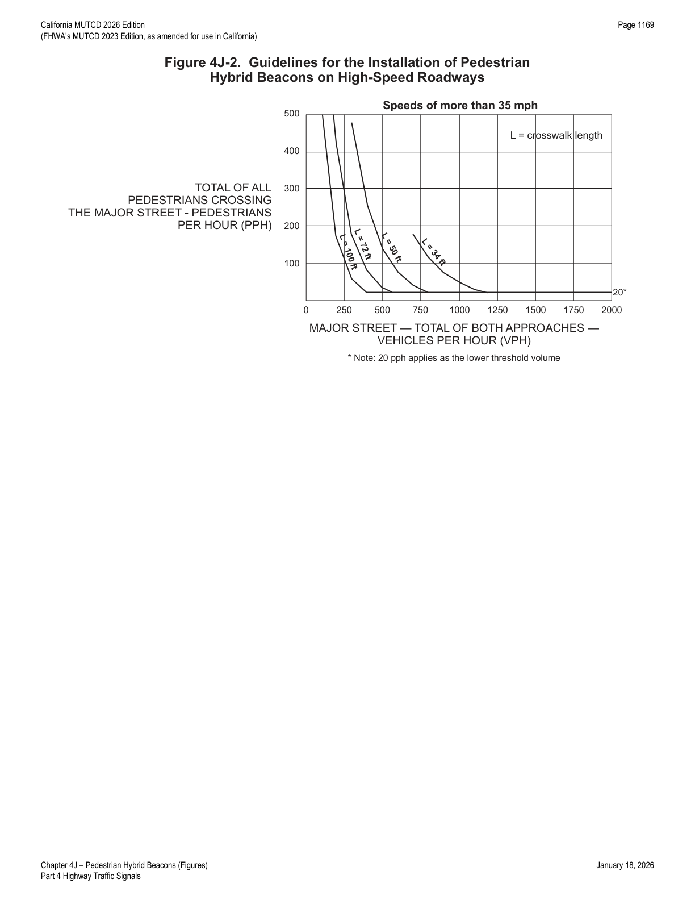
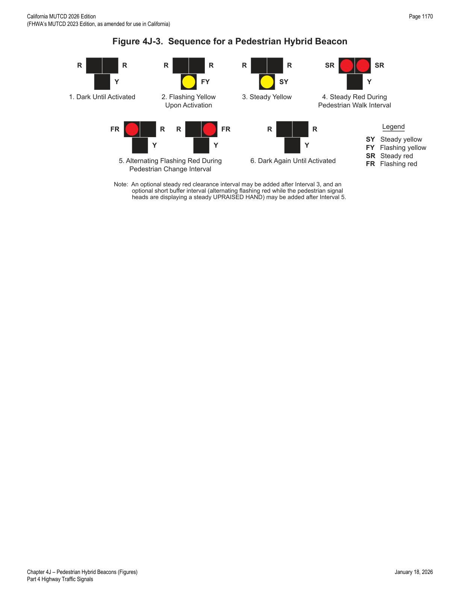

Part 4 · Highway Traffic Signals · Chapter 4J
Pedestrian Hybrid Beacons
Warrants, design, and dark/flash/steady operating sequence for the special hybrid beacon used to stop traffic for pedestrians at unsignalized marked crosswalks.
4J.01Application of Pedestrian Hybrid Beacons
- 01A pedestrian hybrid beacon is a special type of hybrid beacon used to warn and control traffic at an unsignalized location to assist pedestrians in crossing a street or highway at a marked crosswalk.
- 01aA conventional traffic control signal operation with a standard signal face displaying green, yellow, and red (steady and/or flashing red) indications, at a mid-block crosswalk, is an alternative to the pedestrian hybrid beacon.
- 02A pedestrian hybrid beacon may be considered for installation to facilitate pedestrian crossings at a location that does not meet traffic signal warrants (see Chapter 4C), or at a location that meets traffic signal warrants under Sections 4C.05 and/or 4C.06 but a decision is made to not install a traffic control signal.
- 03If used, pedestrian hybrid beacons shall be used in conjunction with signs and pavement markings (see Section 4J.02) to warn and control traffic at locations where pedestrians enter or cross a street or highway. A pedestrian hybrid beacon shall only be installed at a marked crosswalk.
- 04If one of the signal warrants of Chapter 4C is met and a traffic control signal is justified by an engineering study, and if a decision is made to install a traffic control signal, it should be installed based upon the provisions of Chapters 4D through 4I and 4K.
- 05If a traffic control signal is not justified under the signal warrants of Chapter 4C and if gaps in traffic are not adequate to permit pedestrians to cross, or if the speed for vehicles approaching on the major street is too high to permit pedestrians to cross, or if pedestrian delay is excessive, the need for a pedestrian hybrid beacon should be considered on the basis of an engineering study that considers major-street volumes, speeds, widths, and gaps in conjunction with pedestrian volumes, walking speeds, and delay.
- 06For a major street where the posted or statutory speed limit or the 85th-percentile speed is 35 mph or less, the need for a pedestrian hybrid beacon should be considered if the engineering study finds that the plotted point representing the vehicles per hour on the major street (total of both approaches) and the corresponding total of all pedestrians crossing the major street for 1 hour (any four consecutive 15-minute periods) of an average day falls above the applicable curve in Figure 4J-1 for the length of the crosswalk.
- 07For a major street where the posted or statutory speed limit or the 85th-percentile speed exceeds 35 mph, the need for a pedestrian hybrid beacon should be considered if the engineering study finds that the plotted point representing the vehicles per hour on the major street (total of both approaches) and the corresponding total of all pedestrians crossing the major street for 1 hour (any four consecutive 15-minute periods) of an average day falls above the applicable curve in Figure 4J-2 for the length of the crosswalk.
- 08For crosswalks that have lengths other than the four that are specifically shown in Figures 4J-1 and 4J-2, the values should be interpolated between the curves.
- 09The criteria for the pedestrian volume crossing the major street shown in Figures 4J-1 and 4J-2 may be reduced as much as 50 percent if the 15th-percentile crossing speed of pedestrians is less than 3.5 feet per second.
- 10Where there is a divided street having a median of sufficient width for pedestrians to wait, the criteria for the major-street traffic volume shown in Figures 4J-1 and 4J-2 may be applied separately to each direction of vehicular traffic.


In practice: both curve sets plot major-street vehicles per hour (both approaches combined) against total pedestrian crossings for four representative crosswalk lengths (34, 50, 72, and 100 feet), with a lower pedestrian-volume threshold of 20 pph. Engineers plot the studied intersection's data point and compare it to the curve for the closest crosswalk length, interpolating between curves for other lengths.
4J.02Design of Pedestrian Hybrid Beacons
- 01Except as otherwise provided in this Section, a pedestrian hybrid beacon shall meet the provisions of Chapters 4D through 4G, 4I, and 4J.
- 02A pedestrian hybrid beacon face shall consist of three signal sections, with a CIRCULAR YELLOW signal indication centered below two horizontally-aligned CIRCULAR RED signal indications (see Figure 4J-3).
- 03When an engineering study finds that installation of a pedestrian hybrid beacon is justified, then:
- A. At least two pedestrian hybrid beacon faces shall be installed for each approach of the major street;
- B. A stop line shall be installed for each approach to the crosswalk;
- C. A pedestrian signal head complying with the provisions set forth in Chapter 4I shall be installed at each end of the marked crosswalk;
- D. The pedestrian hybrid beacon shall be pedestrian actuated; and
- E. If the pedestrian hybrid beacon is installed at or immediately adjacent to an intersection with a minor street, a STOP sign shall be installed for each minor-street approach.
- 04When an engineering study finds that installation of a pedestrian hybrid beacon is justified, then:
- A. Parking and other sight obstructions should be prohibited for at least 100 feet in advance of and at least 20 feet beyond the marked crosswalk, or site accommodations should be made through curb extensions or other techniques to provide adequate sight distance; and
- B. If installed within a signal system, the pedestrian hybrid beacon should be coordinated.
- 05On approaches having posted or statutory speed limits or 85th-percentile speeds in excess of 35 mph and on approaches having traffic or operating conditions that would tend to obscure visibility of roadside hybrid beacon face locations, both of the minimum of two pedestrian hybrid beacon faces should be installed over the roadway.
- 06On multi-lane approaches having posted or statutory speed limits or 85th-percentile speeds of 35 mph or less, either a pedestrian hybrid beacon face should be installed on each side of the approach (if a median of sufficient width exists) or at least one of the pedestrian hybrid beacon faces should be installed over the roadway.
- 07A pedestrian hybrid beacon should comply with the signal face location provisions described in Sections 4D.05 through 4D.10.
- 08A CROSSWALK—STOP ON RED (symbolic circular red) (R10-23) or a STOP ON STEADY RED—YIELD ON FLASHING RED AFTER STOP (R10-23a) sign (see Section 2B.59) may be installed facing each major street approach.
- 08aRefer to FHWA's List of Known Errors for error in Paragraph 8 text. Refer to Section 1A.04 for more details.
- 09A W11-2 (Pedestrian), S1-1 (School), or W11-15 (Trail) crossing warning sign with an AHEAD (W16-9P) supplemental plaque may be placed in advance of a pedestrian hybrid beacon. A Warning Beacon may be installed to supplement the W11-2, S1-1, or W11-15 sign.
- 10Backplates (see Section 4D.06) may be used with pedestrian hybrid beacons.
- 11Accessible pedestrian signals (see Chapter 4K) where a pedestrian hybrid beacon is used provide information in non-visual formats (such as audible tones and/or speech messages, and vibrating surfaces) so that a pedestrian with vision disabilities can know when to cross the street.
- 12If a Warning Beacon supplements a W11-2 sign in advance of a pedestrian hybrid beacon, it should be programmed to flash only when the pedestrian hybrid beacon is not in the dark mode.
- 13If a Warning Beacon is installed to supplement the W11-2 sign, the design and location of the Warning Beacon shall comply with the provisions of Sections 4S.01 and 4S.03.
- 14Bicycle signal faces (see Chapter 4H) shall not be used at a pedestrian hybrid beacon.
4J.03Operation of Pedestrian Hybrid Beacons
- 01Pedestrian hybrid beacon indications shall be dark (not illuminated) during periods between actuations.
- 02Following an actuation by a pedestrian, a pedestrian hybrid beacon face shall display a flashing CIRCULAR YELLOW signal indication, followed by a steady CIRCULAR YELLOW signal indication, followed by both steady CIRCULAR RED signal indications during the pedestrian walk interval, followed by alternating flashing CIRCULAR RED signal indications during the pedestrian change interval (see Figure 4J-3). Upon termination of the pedestrian change interval, the pedestrian hybrid beacon faces shall revert to a dark (not illuminated) condition.
- 03Except as provided in Paragraph 4 of this Section, the pedestrian signal heads shall continue to display a steady UPRAISED HAND (symbolizing DONT WALK) signal indication when the pedestrian hybrid beacon faces are either dark or displaying flashing or steady CIRCULAR YELLOW signal indications. The pedestrian signal heads shall display a WALKING PERSON (symbolizing WALK) signal indication when the pedestrian hybrid beacon faces are displaying steady CIRCULAR RED signal indications. The pedestrian signal heads shall display a flashing UPRAISED HAND (symbolizing DONT WALK) signal indication when the pedestrian hybrid beacon faces are displaying alternating flashing CIRCULAR RED signal indications. Upon termination of the pedestrian change interval, the pedestrian signal heads shall revert to a steady UPRAISED HAND (symbolizing DONT WALK) signal indication.
- 04Where the pedestrian hybrid beacon is installed adjacent to a roundabout to facilitate crossings by pedestrians with vision disabilities and an engineering study determines that pedestrians without vision disabilities can be allowed to cross the roadway without actuating the pedestrian hybrid beacon, the pedestrian signal heads may be dark (not illuminated) when the pedestrian hybrid beacon faces are dark.
- 05The duration of the flashing yellow interval should be determined by engineering judgment.
- 06The duration of the flashing yellow interval should not vary on a cycle-by-cycle basis.
- 07If the pedestrian hybrid beacon is coordinated as a part of a signal system, it should remain in the dark condition after a pedestrian actuation has been received until the point in the background cycle when the predetermined duration of the flashing yellow interval needs to be initiated in order to achieve the appropriate coordinated offset.
- 08If a minimum dark time between activations of the pedestrian hybrid beacon has been set on the controller, the pedestrian hybrid beacon may remain in the dark condition after a pedestrian actuation has been received until the minimum dark time has been provided.
- 09The minimum dark time is a preprogrammed time set in the controller that provides time between the pedestrian actuation and beginning of the flashing yellow interval. At locations in coordinated signal systems, the dark time can be variable based on when the pedestrian actuation occurs in the coordinated signal timing sequence.
- 10The duration of the steady yellow change interval shall be determined using engineering practices in accordance with the provisions in Section 4F.17.
- 11A steady yellow change interval should have a minimum duration of 3 seconds and a maximum duration of 6 seconds (see Section 4F.17). The longer intervals should be reserved for use on approaches with higher speeds.
- 12A steady red clearance interval may be used after the steady yellow change interval.
- 13The alternating flashing CIRCULAR RED signal indications may continue to flash for a short period after the pedestrian change interval has terminated to provide a buffer interval for pedestrians.
- 14A pedestrian hybrid beacon that is located 200 feet or less from an active grade crossing should be preempted in accordance with the applicable provisions in Sections 4F.19 and 8D.09.
- 15If a pedestrian hybrid beacon is placed into a flashing mode by a conflict monitor (malfunction management unit) or by a manual switch, the pedestrian hybrid beacon faces shall display flashing CIRCULAR YELLOW signal indications to each approach of the major street and the pedestrian signal heads shall revert to a dark (not illuminated) condition.

In practice: the "hybrid" name comes from combining features of both a beacon (dark-until-actuated, flashing operation) and a full signal (steady yellow/red intervals) — drivers see dark → flashing yellow → steady yellow → steady red (while pedestrians walk) → alternating flashing red (pedestrian clearance, at which point drivers may proceed after stopping, like a flashing red) → dark again.
★ Key Takeaways — Chapter 4J
- A pedestrian hybrid beacon (PHB) is only installed at a marked crosswalk and only where signal warrants under Chapter 4C are not met, or are met but a full signal isn't chosen; the volume/pedestrian curves in Figures 4J-1 (≤35 mph) and 4J-2 (>35 mph) guide the decision, keyed to crosswalk length.
- The beacon face is 3 sections: one CIRCULAR YELLOW below two horizontally-aligned CIRCULAR RED indications; at least two faces per major-street approach, plus pedestrian signal heads (Chapter 4I) at each end of the crosswalk and STOP signs on any minor-street approach.
- Operating sequence: dark → flashing yellow → steady yellow → steady red (pedestrian WALK) → alternating flashing red (pedestrian change interval, driver treats like flashing red/stop-and-proceed) → dark again.
- Steady yellow change interval: 3–6 seconds, engineering-determined per Section 4F.17; a PHB within 200 feet of an active grade crossing should be preempted per Sections 4F.19/8D.09.
- Bicycle signal faces are never used at a pedestrian hybrid beacon.